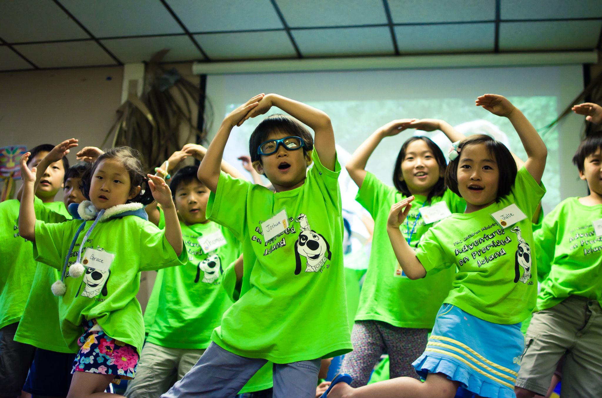

"There shall come forth a shoot from the stump of Jesse,
and a branch from his roots shall bear fruit."
Isaiah 11:1

Palomar Korean Church's Children's Ministry, also known as Roots Ministry, caters to our beautiful children in our church. This ministry is a healthy, safe environment for kids to come and learn more about God's unconditional love and grace. There are annual festivals and summer Vacation Bible Study to engage the kids in learning more about our beloved Father.
Back to top